Case studyPlate III · Installation · 2025
The Pulse
A “macro controller”: a microcontroller enlarged into an oversized, strangely intimate body that keeps time with the visitor’s heartbeat.
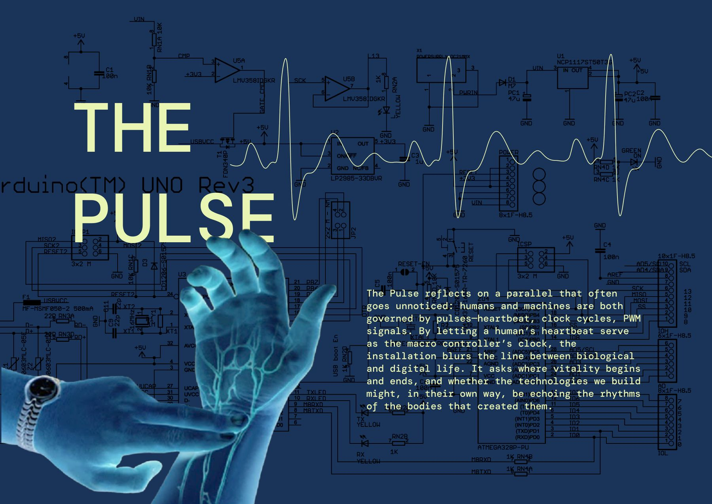
- Type
- Interactive installation
- Hardware
- Arduino, MAX30105 pulse sensor, CH1116 OLED, SG90 servos, LilyPad LEDs, joystick
- Software
- Arduino C++, p5.js over serial
- Fabrication
- Rhino, Illustrator, laser-cut acrylic and wood, PLA 3D print
Ideation
Macro controllerThe Pulse reflects on a parallel that often goes unnoticed: humans and machines are both governed by pulses, heartbeat, clock cycles, PWM signals. By letting a human’s heartbeat serve as the macro controller’s clock, the installation blurs the line between biological and digital life.
It asks where vitality begins and ends, and whether the technologies we build might, in their own way, be echoing the rhythms of the bodies that created them.
The Pulse reimagines a microcontroller as an oversized, strangely intimate body. Built as a “macro controller,” the installation enlarges a familiar circuit board until its layout reads as something architectural, even anatomical.
Visitors insert their finger into an enlarged analog pin, completing a circuit with their own body.

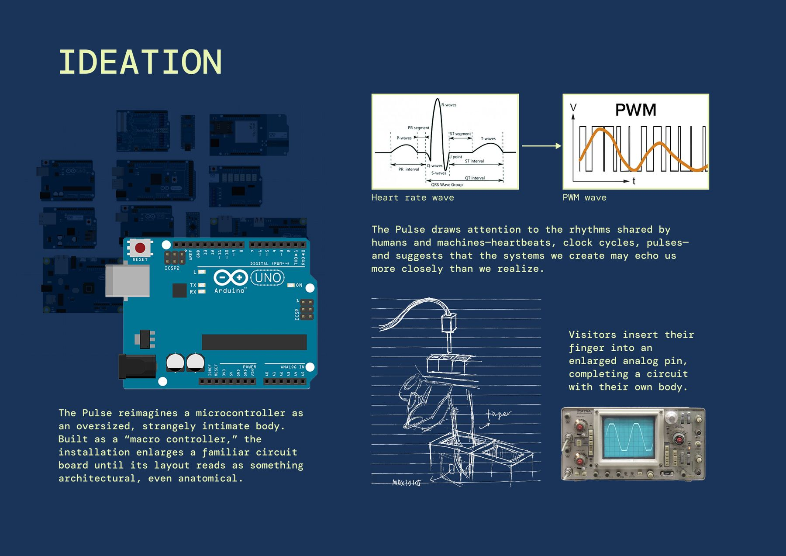
Diagram
Inputs and outputsThree inputs drive six outputs. The pulse sensor sits inside the “A0” pin, so the visitor’s finger is the signal: the board’s eyes open, its LEDs blink and the screen draws the beat as it arrives.
- Input · Button
- LED on while pressed
- Input · Joystick
- Steers the p5.js animation
- Input · Pulse sensor
- Visitor inserts a finger in the “A0” pin
- Output · LEDs
- Blink with the pulse, stay on while a pulse is detected
- Output · Mechanical eyes
- Open when a pulse is detected, blink with it
- Output · OLED screen
- Displays the pulse wave like an oscilloscope
- Output · p5.js
- Ultrasound-scan styled interactive animation

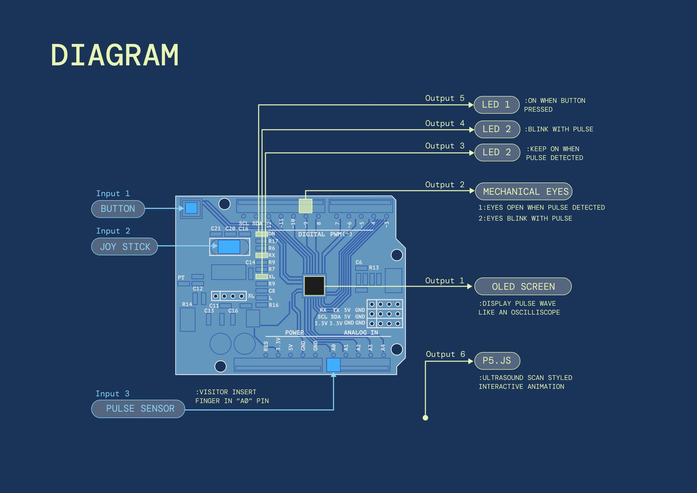
Technical realisation
Sensors and outputsEach part was built and tested on its own before anything was joined: detectBeat() for the MAX30105 pulse sensor, drawScreen() for the OLED, startBlink() for the SG90 servos that move the mechanical eyes, and digitalWrite(12, HIGH) for the LilyPad LEDs.
The servo test code went through several rounds of angle adjustment before the eyelids opened and blinked convincingly.

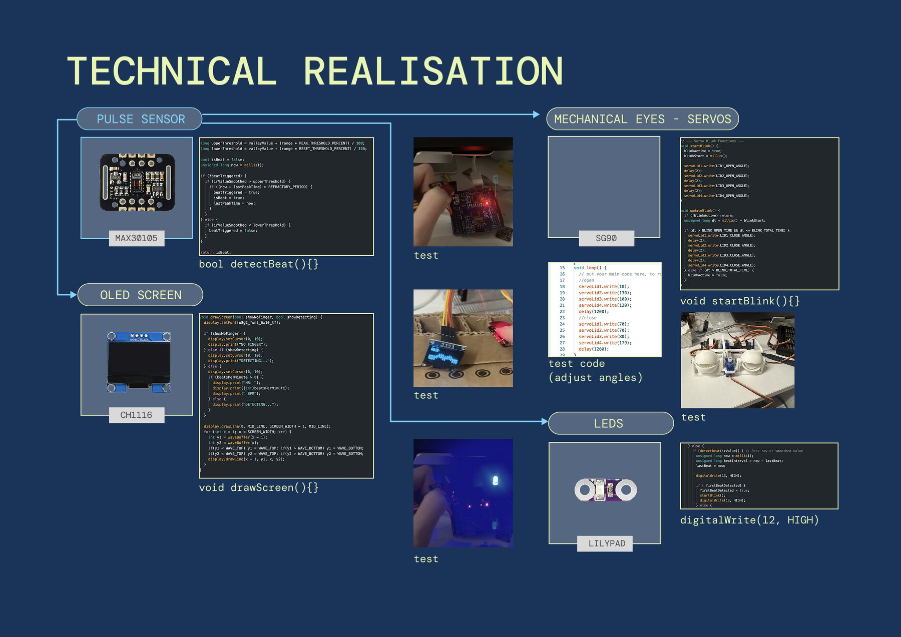
The joystick (COM-09032) is read in updateJoystick() and sent over serial to p5.js, where serialEvent() moves a scanning view across the board. The look borrows from B-mode ultrasound, so the machine is examined the way a body would be.

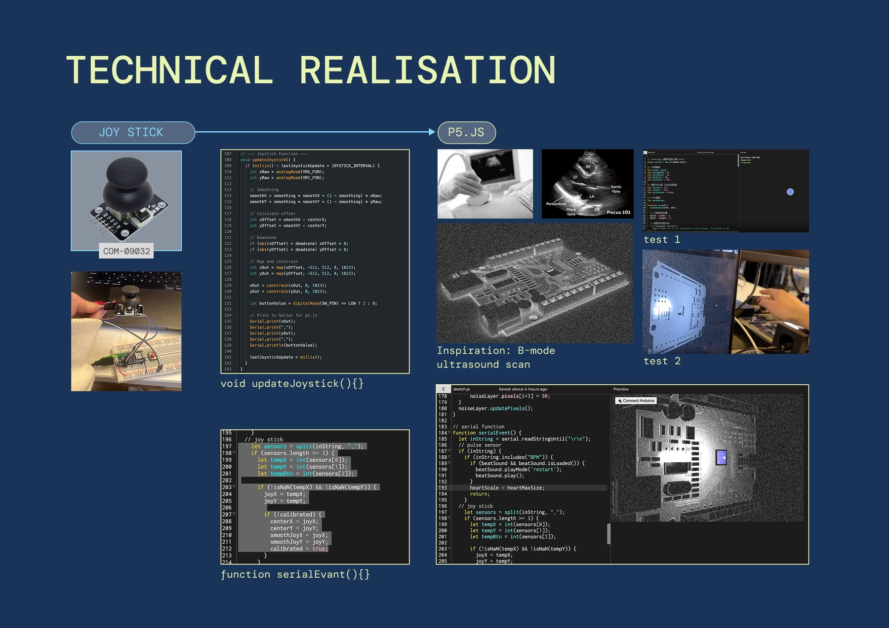
Wiring
Problems and solutionsI found both the OLED screen and pulse sensor died after I assembled the full circuit.
It turned out the servo motors were huge signal intruders: they drop the voltage instantly when they move. When the voltage falls below about 4.5 V, the Arduino or sensor “browns out” and restarts or freezes.
- Pull-up resistors
- Between SDA/SCL and 5 V. They hold the line firmly at 5 V so only a deliberate signal from the sensor can pull it down.
- Capacitor
- Across servo + and servo −. It supplies current instantly, so the main voltage line doesn’t dip.

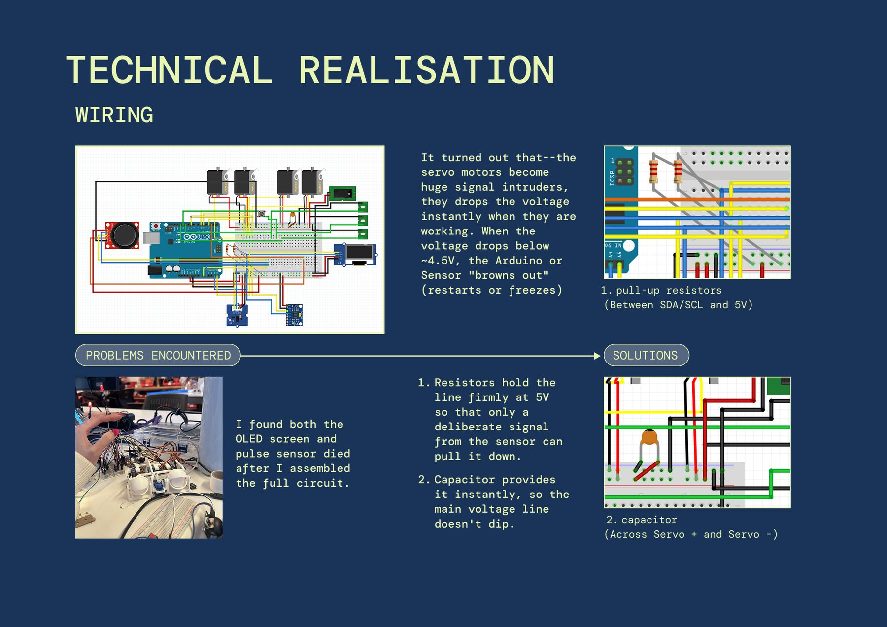
Fabrication
Outer shellThe board is built in layers, like the PCB it imitates: laser-cut acrylic and wood, 3D-printed PLA parts, and the electronics sandwiched between.
Every part went from CAD to CAM to hand: laser files drawn in Illustrator and print files modelled in Rhino; then laser cutting, spray paint and 3D printing; then wood work and assembly.

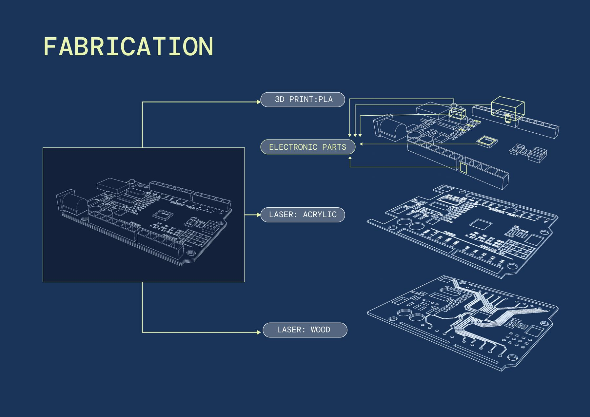

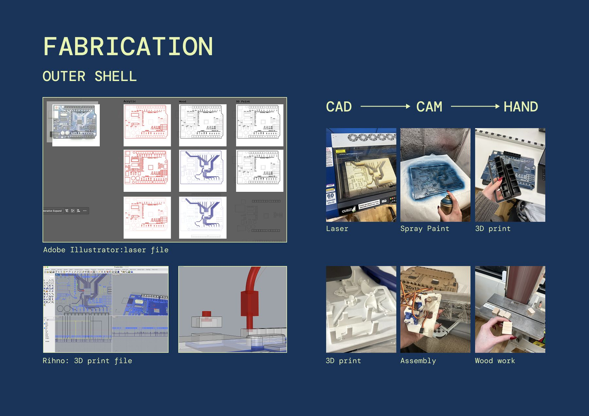
Soldering and assembly
The wiring layout was dense enough that I printed it out at real size to make sure there wouldn’t be any errors while soldering.
I was planning to hide all these chaotic wires in a case, but later realized they fit the concept if left on show. (There was also no time to make a perfect bottom case.)

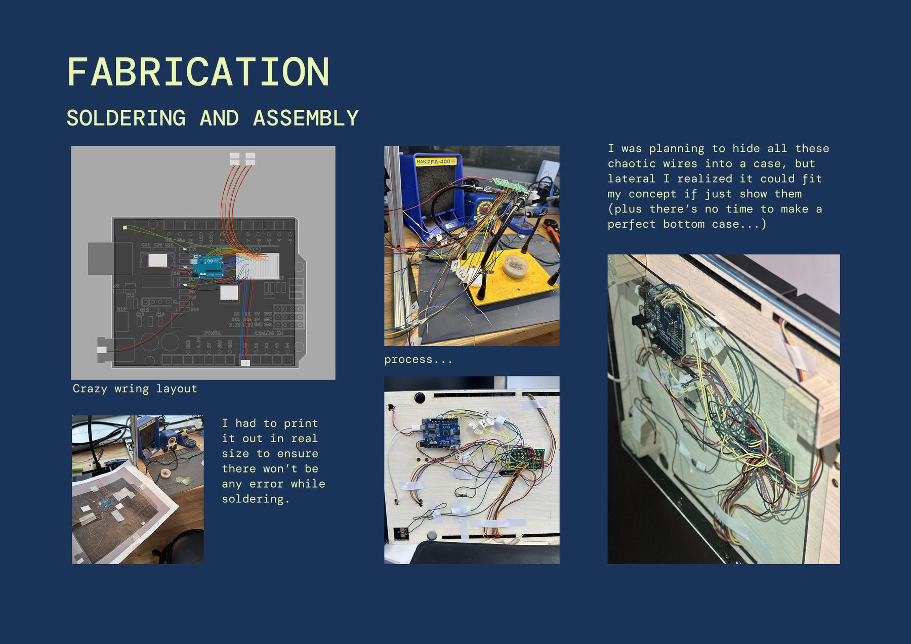
Final outcome
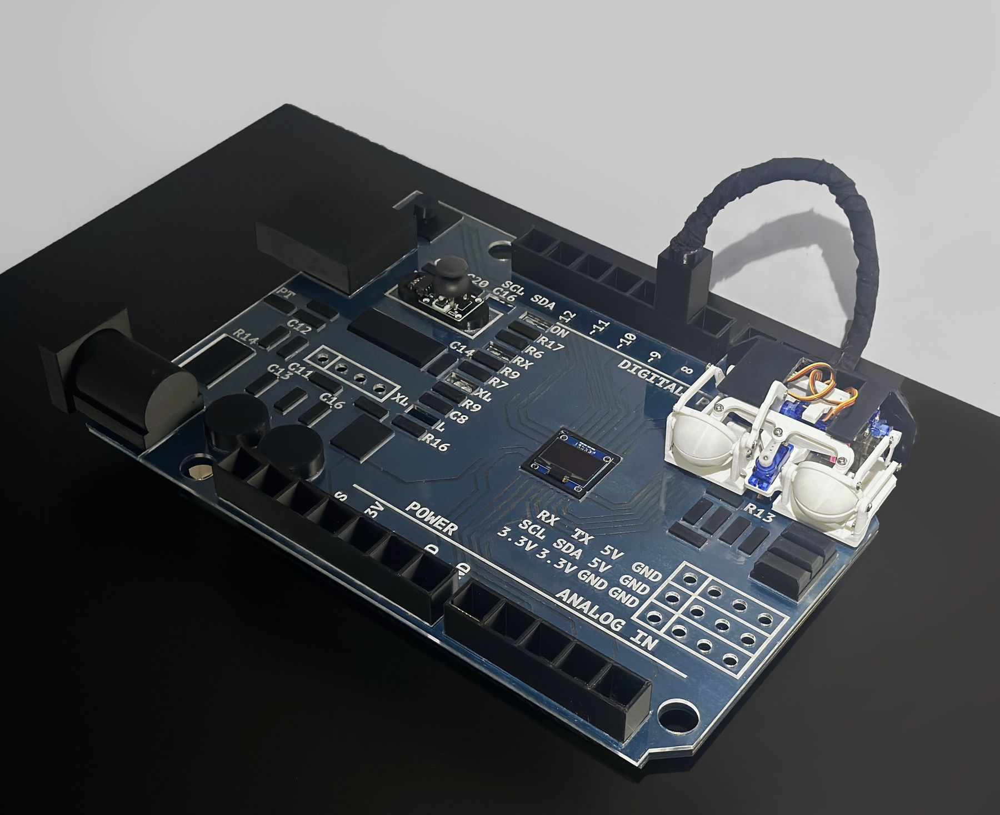
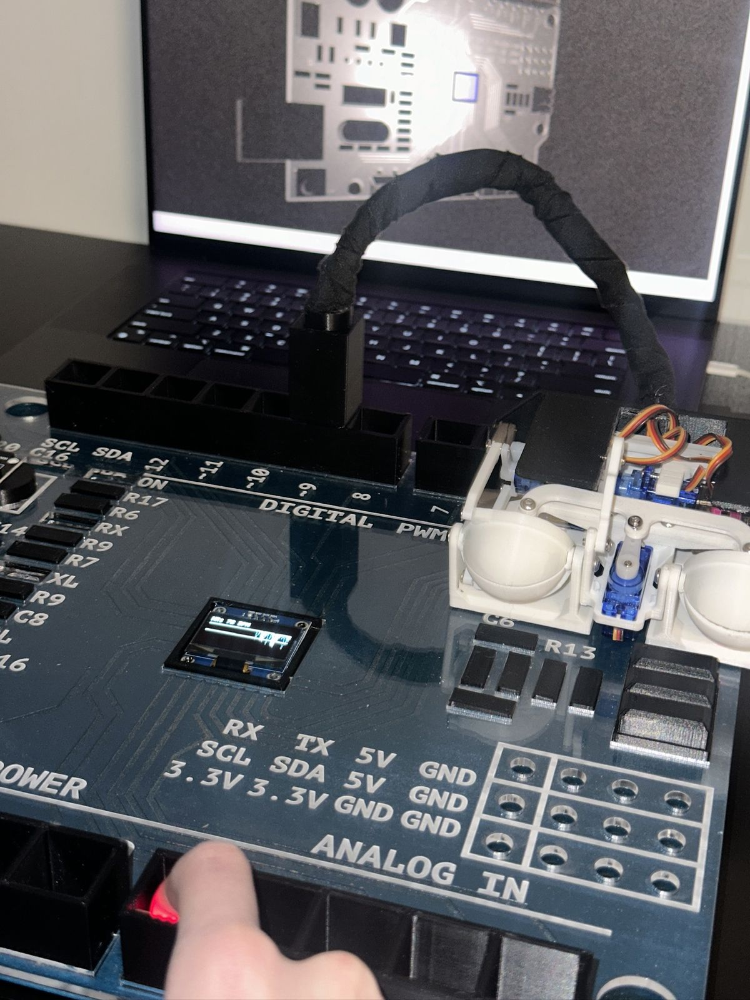